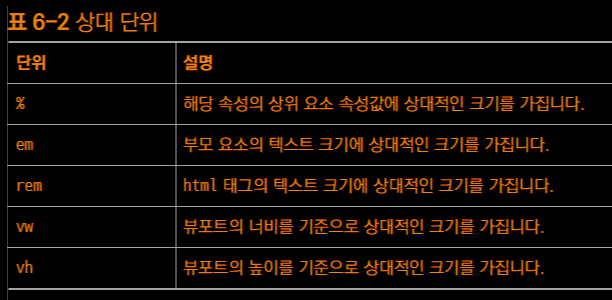

-
% 부모 요소의 속성값에 따라 상대적인 크기를 가짐
ex. 부모 80% -(상속)> 자식 80%
-
em 부모 요소의 크기를 기준으로, 상대적인 크기를 가짐
- %: 사용되는 속성에 따라 기준이 달라짐
- em: 오직 텍스트 크기를 기준으로 함
ex. 2em(기준) -> 자식 요소 크기 = 부모 요소 속성값 x 2배
-
rem
- html 텍스트 크기에 대항 상대적인 값
- 1rem = html 텍스트 크기 x 1배
- 현대 html 텍스트 크기 = 16px
-
-
-